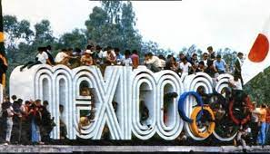
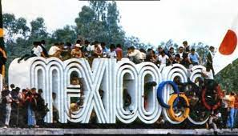

Aportaciones
1)Impulsó la educación pública al establecerse el libro gratuito en escuelas primarias
2)Mejoró la alimentación infantil con el incremento de desayunos escolares
3)Se creó el instituto de seguridad y servicios sociales de los trabajadores del estado (ISSSTE)
4)Creó el Museo Nacional de Antropología
5)Nacionalizó la Industria Eléctrica
6)México entró al marco de crecimiento mundial logrando que crecieran los sectores de la economía
7)Modernizó la infraestructura en las vías de comunicación
8)Decidió brindarles "aguinaldo" a sus trabajadores
9)Hizo que el Comité Olímpico Internacional permitiera que México fuera sede de las Olimpiadas
 
